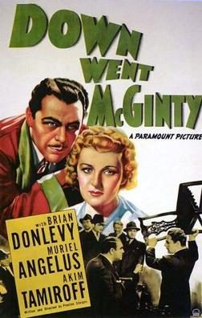

The Great McGinty
Studio: Paramount Pictures
Starring: Brian Donlevy, Muriel Angelus, Akim Tamiroff
Director: Preston Sturges
Writer: Preston Sturges
Producer: Buddy DeSylva
The Great McGinty is a 1940 American political satire comedy film written and directed by Preston Sturges, starring Brian Donlevy and Akim Tamiroff and featuring William Demarest and (in her final screen appearance) Muriel Angelus. It was Sturges's first film as a director; he sold the story to Paramount Pictures for just $10 on condition he direct the film. Sturges received an Oscar for Best Original Screenplay.
Trivia
- Won the Academy Award for Best Writing, Original Screenplay.
- The Great McGinty had numerous working titles: "The Story of a Man", "The Vagrant", "The Mantle of Dignity", "The Biography of a Bum", and "Down Went McGinty", (which was used for the film's release in the U.K). Sturges had written the original story, "The Story of a Man", in 1933 with Spencer Tracy in mind.
- After trying to sell the story to Universal in 1935, and the Saturday Evening Post in 1938 under the title Biography of a Bum, Sturges finally sold it to Paramount on August 19, 1939, for $10 on the condition that he be allowed to direct it.
- Paramount agreed, and provided Sturges a budget of $350,000, a three-week shooting schedule, and inexpensive stars to work with.
Previous Showings
8 Runs • 4 Festivals
5,151 tickets sold
Original Billings: 1 run (August 23, 1940)
Original Run: August 23, 1940 (Friday - Saturday)
All runs on record (8):
- August 23, 1940 (Friday - Saturday)Brian Donlevy, Akim Tamiroff
- September 11 - 13, 1991 · 676 ticketsw/ Christmas in July
- November 29 - December 1, 1996 · 1,287 ticketsw/ State of the Union
- September 21 - 22, 2002 · 553 ticketsFall Folliesw/ Stage Door
- February 4 - 6, 2005 · 634 ticketsw/ The Cocoanuts
- November 6 - 8, 2010 · 598 ticketsFall 2010 Featuring film noir every Thursday and Fridayw/ Hail the Conquering Hero
- November 14 - 17, 2013 · 884 ticketsPreston Sturges and The Marx Brosw/ The Cocoanuts
- July 20 - 22, 2016 · 519 ticketsSummer 2016w/ The Miracle of Morgan's Creek